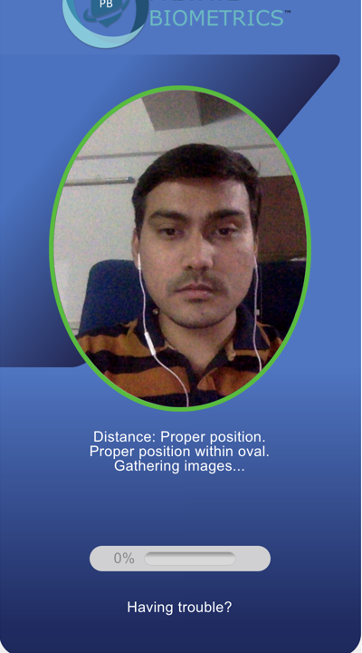
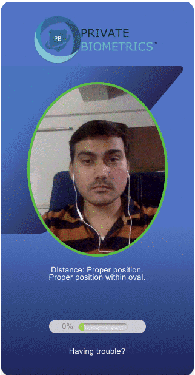
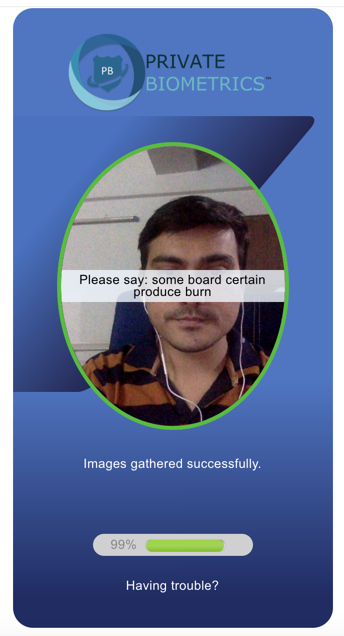
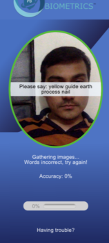
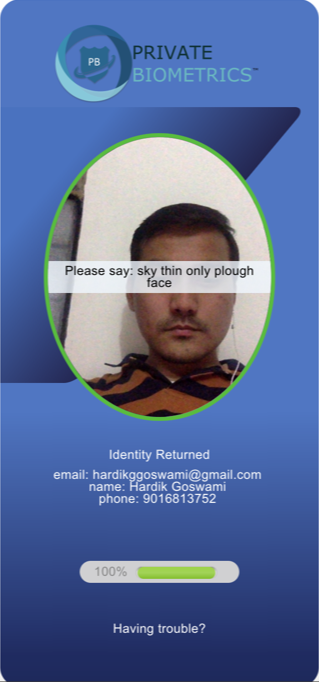

How Can We Help You?
A facial recognition is face recognition technology measures and matches the unique characteristics for the purposes of identification or authentication.
Facial recognition is a category of biometric software that maps an individual's facial features mathematically and stores the data as a faceprint. The software uses deep learning algorithms to compare a live capture or digital image to the stored faceprint in order to verify an individual's identity.
Yann LeCun and Yoshua Bengio introduced the concept of CNNs in 1995. A con-volutional neural network is a feed-forward network with the ability of extracting topological properties from the input image. It extracts features from the raw image and then a classifier classifies extracted features. CNNs are invariance to distortions and simple geometric transformations like translation, scaling, rotation and squeezing.
Convolutional Neural Networks combine three archit ectural ideas to ensure some degree of shift, scale, and distortion invariance: local receptive fields, shared weights, and spatial or temporal sub-sampling. The network is usually trained like a stan-dard neural network by back propagation.
Biometrics have a long-held hope of replacing passwords by establishing a non-repudiated identity and providing authentication with convenience. Convenience drives consumers toward biometrics-based access management solutions. Unlike passwords, biometrics cannot be script-injected; however, biometric data is considered highly sensitive due to its personal nature and unique association with users. Biometrics differ from passwords in that compromised passwords may be reset. Compromised biometrics offer no such relief.
A compromised biometric offers unlimited risk in privacy (anyone can view the biometric) and authentication (anyone may use the biometric). Standards such as the Biometric Open Protocol Standard (BOPS) (IEEE 2410-2016) provide a detailed mechanism to authenticate biometrics based on pre-enrolled devices and a previous identity by storing the biometric in encrypted form. This solution allows authentication and identification to occur in up to polynomial time, allowing for search in encrypted biometric stores with speed, accuracy and privacy.
The act of signing/registration people up for participation is enrollment.
Since we have little control over devices such as cameras or sensors, the biometric template arrives as plaintext. If we encrypt it immediately and only process it as ciphertext, we have the maximum practical level of privacy. An important part of offering this highest level of privacy is a one-way encryption algorithm, meaning that given ciphertext, there is no mechanism to get to the original plaintext. Many one-way encryption algorithms exist, such as MD5 and SHA-512. However, these algorithms are not homomorphic. This means we cannot do a closeness match between two ciphertext vectors using Euclidean measurements. Open Inference offers a general purpose solution that produces biometric ciphertext that is Euclidean-measurable. We do this using a Neural Network. We then apply a classification algorithm to allow for one-to-many identification. This solution maximizes privacy and runs between O(1) and O(log(n)) tim
Enrollment is the act of introducing a Subject to the indentification or authenication system. Enrollment, for Open Inference, is the process of extractng features and training a neural network for a particular subject. For Enrollment to work reliably, we give as mnay biometric instances as possible. We use in excess of 10 images, which the software morphs into 250 distinct images. The system then trains on 250 images. All of the training and images are encrypted BEFORE any form of training guaranteeing full privacy.
Step 1. Face Detection


Step 2. Voice Identification
Step 3. Results

Enroll New User Details
User Identity Returned
